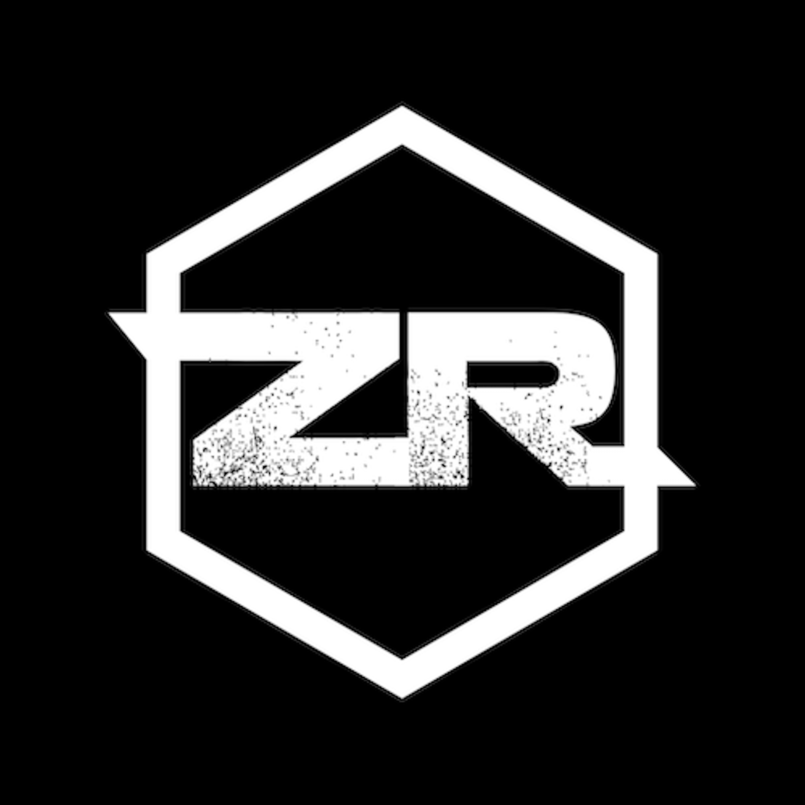

Built from your existing ZR-in-hexagon mark. The original's gritty texture won't survive at 16×16 — these refine the silhouette while keeping it recognisable. Each option shown at 200/64/32/16 px, plus a browser-tab mock and a dark-mode chip.

ZR · hexagon · monogramThe closest to your original — same hexagonal frame, same ZR monogram, but with crisp geometric strokes instead of distressed grunge. Survives at small sizes; reads instantly as the same brand.
Filled hexagon, knockout ZR. The most legible at 16×16 — solid shapes always beat strokes at tiny sizes. Strong on light browser chrome.
Drops the hex frame, leans hard into the new editorial brand: a single italic Fraunces "Z" on cream paper. Personal, literary, not a tech logo. Sets the brand apart from generic developer marks.
Strips the ZR letterforms entirely — just the hexagonal silhouette as a solid fill, with a small accent-coloured dot. Iconic, abstract, unmistakable in a row of tabs.
Reduces the ZR to a single bold Z stroke that doubles as a hexagon corner — the diagonal echoes the original mark's angularity. Custom, geometric, holds at any size.
A small rectangular "stamp" — like a publisher's colophon. ZR italic on cream, accent rule beneath. Different shape language from the hex; pairs naturally with the editorial site direction.
Six tabs in a browser, each with one option. This is what your users will actually see most of the time.
Each option also needs to read on dark Safari/Chrome chrome. Inverted versions below.
Option 02 (Solid hex) for pure favicon legibility — solid shapes always win at 16×16. Option 03 (Editorial Z) if the brand identity matters more than recognising the old mark; it pairs perfectly with the new editorial site direction. Pick 01 if you want minimal change.